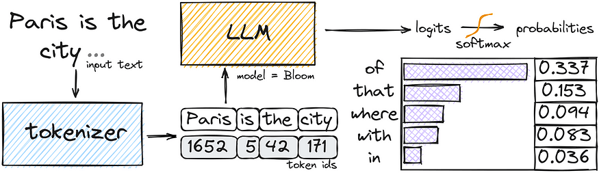
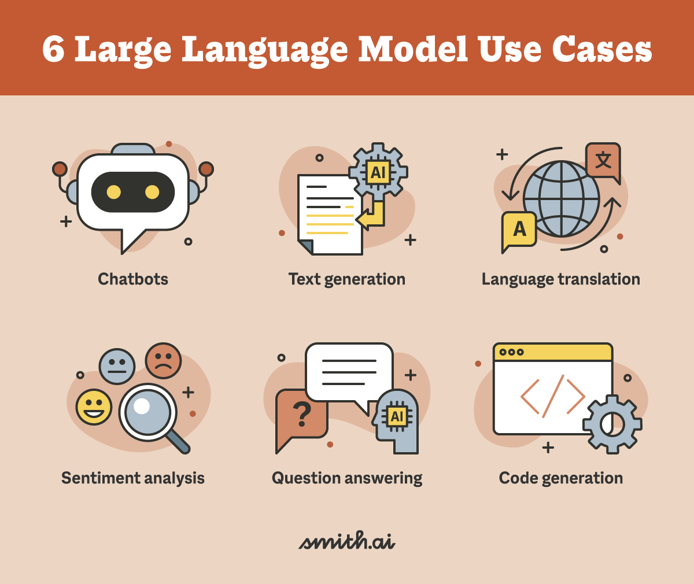
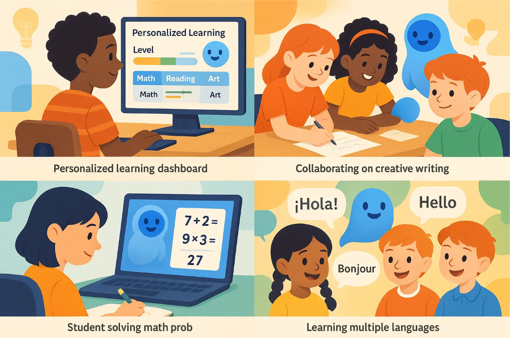

O que é um LLM?
📚 Large: Eles aprendem com bilhões de palavras e frases.
🗣️ Language: Eles entendem e criam texto de forma natural.
🔍 Model: Eles usam matemática avançada para prever as melhores respostas.
Imagine ter um assistente superinteligente que pode responder perguntas, contar histórias e até ajudar com a lição de casa — assim como o ChatGPT ou a Siri. Esses assistentes de IA são alimentados por Modelos de Linguagem de Grande Escala (LLMs), sistemas avançados de IA que podem entender e gerar texto.
Mas como eles funcionam? E como as crianças podem começar a aprender sobre eles? Vamos explorar os LLMs de uma maneira divertida e simples!
Como os LLMs Aprendem?
Os LLMs aprendem da mesma forma que as crianças aprendem uma língua — ouvindo, lendo e praticando!
Eles leem milhões de livros, artigos e conversas para entender como as palavras funcionam juntas. Eles aprendem padrões para poder prever o que deve vir a seguir em uma frase. Eles melhoram com a prática, assim como uma criança aprende novas palavras todos os dias.

Exemplo:
Você: “Era uma vez, havia um dragão...”
IA: “...que adorava ler livros em vez de soltar fogo!”
Fato Divertido: Assim como uma criança aprende melhor quando ouve mais histórias, os LLMs melhoram quanto mais leem e praticam!
O que os LLMs Podem Fazer?

Os LLMs podem fazer muito mais do que apenas responder perguntas!
- Ajudar com a lição de casa — Como um super tutor inteligente explicando conceitos passo a passo.
- Escrever histórias e poesias — Como um coautor ajudando você a criar aventuras divertidas.
- Traduzir idiomas — Como um guia de viagem multilíngue que entende diferentes idiomas.
- Resumir textos longos — Como um leitor rápido que dá a ideia principal em segundos.
- Ajudar com programação — Como um amigo programador que ajuda a escrever código.
Exemplo:
Um aluno pergunta: “Você pode me ajudar a escrever uma história de pirata?”
IA responde: “Arrr! O Capitão Jake zarpa pelos mares em busca de um tesouro escondido. Mas ele não sabia que um papagaio travesso havia roubado seu mapa!”
Fato Divertido: Os LLMs podem ajustar suas respostas com base na idade — explicando as coisas de forma simples para crianças mais novas e de forma mais detalhada para estudantes mais velhos!
Como os LLMs Entendem as Palavras?
Os LLMs transformam as palavras em números — como códigos secretos! Cada palavra é representada por um número, e o modelo aprende as relações entre esses números para entender o significado.
Por exemplo, o modelo aprende que "gato" e "cachorro" são parecidos, porque aparecem em contextos semelhantes. Assim, ele começa a entender as conexões entre ideias e frases.
Fato Curioso: Mesmo sem realmente “entender” como um humano, os LLMs conseguem gerar textos muito parecidos com o que as pessoas escreveriam!
Como as Crianças Podem Começar a Aprender sobre LLMs?

Existem projetos de IA divertidos para crianças que você pode tentar!
- Construir um chatbot simples — Criar um assistente virtual que responde às suas perguntas.
- Escrever histórias interativas — Usar IA para criar histórias que mudam com base nas suas escolhas.
- Traduzir palavras ou frases — Criar um tradutor simples usando IA.
- Jogar jogos educativos — Jogar jogos que ensinam conceitos de IA de forma divertida.
Esses projetos podem ser feitos com ferramentas como Scratch e outras.